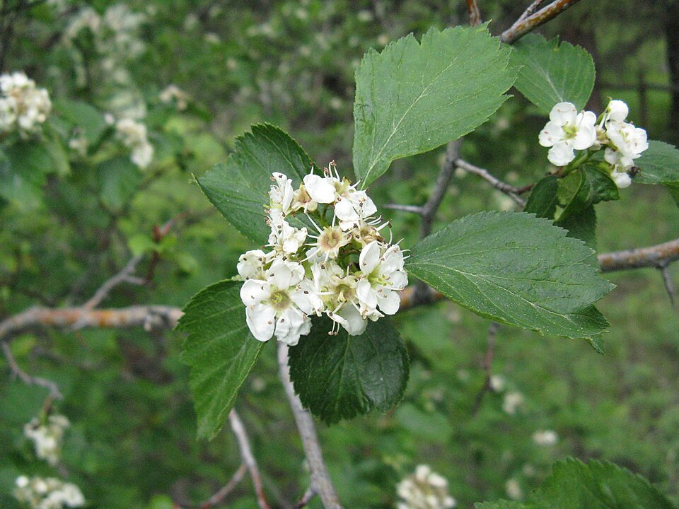

Hawthorn

Photo by: Nadia Talent
Crataegus douglasii
There are 9 varieties of hawthorn native to Washington State.
- Scientific Name: Crataegus castlegarensis
- Other Names: Castlegar hawthorn
- Scientific Name: Crataegus chrysocarpa
- Other Names: Fireberry hawthorn
- Scientific Name: Crataegus douglasii
- Other Names: Black hawthorn and Douglas’s Hawthorn
- Scientific Name: Crataegus gaylussacia
- Other Names: Huckleberry hawthorn and Suksdorf’s hawthorn
- Scientific Name: Crataegus macracantha
- Other Names: Large-throned hawthorn and Western large-throned hawthorn
- Scientific Name: Crataegus okanaganensis
- Other Names: Okanagan hawthorn
- Scientific Name: Crataegus okennonii
- Other Names: O’Kennon’s hawthorn
- Scientific Name: Crataegus phippsii
- Other Names: Phipps’s hawthorn
- Scientific Name: Crataegus tenuior
- Other Names: Slender red hawthorn
- Description: The plant is a large shrub or tree the branches have large thorns on them. The leaves are medium to dark green and serrated. The flowers are small, pinkish-white in color, and grow in clusters. The berries are red to blue-black, the berries have large seeds.
- Distribution: The plant grows throughout North America.
- Habitat: Open woodlands, at the edge of forests, thickets, meadows, and along stream banks.
- Fun Fact: Hawthorn is in the rose family.